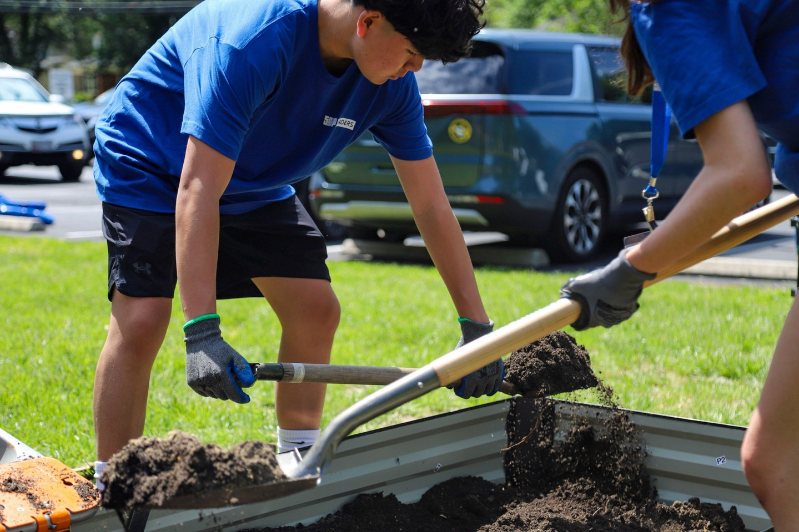

Every corner
deserves to
be green.
We design, build, and maintain pocket parks on overlooked urban lots, block by block, for the neighborhoods that need it most, not just the ones that can already afford it.
Green space shouldn't depend on your zip code. It should be standard: on every corner, in every neighborhood.
Green space in cities is not evenly shared.
Tree canopy and park access tend to track closely with income, often dropping off sharply just a few blocks from where they're abundant. The gaps usually aren't empty land; they're vacant lots, dead-end corners, and forgotten margins waiting for a reason to be used.
more tree canopy in higher-income neighborhoods than in lower-income ones, in many U.S. cities.
people in the U.S. don't have a park within a 10-minute walk of home.
hotter on average in low-canopy neighborhoods during summer heat waves.
General patterns drawn from published urban forestry & park-access research, not specific to any one city.
From dead corner to pocket park, in four steps.
The same disciplined process, whether it's a single neglected lot or a citywide program.
Find the corner
We map underused lots, dead ends, and easements with residents and city data together.
Design with the block
Every layout is shaped by the people who'll actually use it, not a template dropped in from outside.
Build it in weeks
Native planting, seating, and shade, sized to fit a pocket lot, not a budget for a stadium.
Maintain & grow
We stay on after the ribbon-cutting, with a maintenance plan the neighborhood can sustain.

A dead end becomes the block's front yard.
This corner sat empty and unused for over a decade: a dumping spot, not a destination. We worked with 60 volunteers across Montgomery County, MD to turn it into a shared green with seating, a garden, and shade trees that will mature with the neighborhood.
It's the model for every corner we take on: small footprint, fast build, designed by the people who will use it.
We're just getting started. Here's what we're building toward.
Every Corner Green launched in 2026. These are our goals for the first year: not a victory lap, a worksheet.
corners broken ground on
neighborhoods, across income levels
resident-led design, every time
Year One fundraising goal
However you show up, there's a corner for you.
Neighbors
Know a corner that's been empty too long? Nominate it and help shape what goes there.
Nominate a cornerCities & Developers
Bring pocket parks into a development plan or a citywide greening program.
Start a projectPartners & Funders
Help fund the Year One goal and get your name on the corners it builds.
Become a partnerWe didn't start Every Corner Green because we had the answer to climate change. We started it because there was an empty field in our neighborhood, and a beautiful park ten minutes from the other, and no good reason for the gap.
Every corner we take on is small. The pattern, repeated enough times, isn't.
The Every Corner Green team